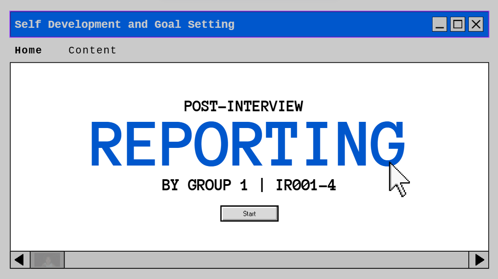
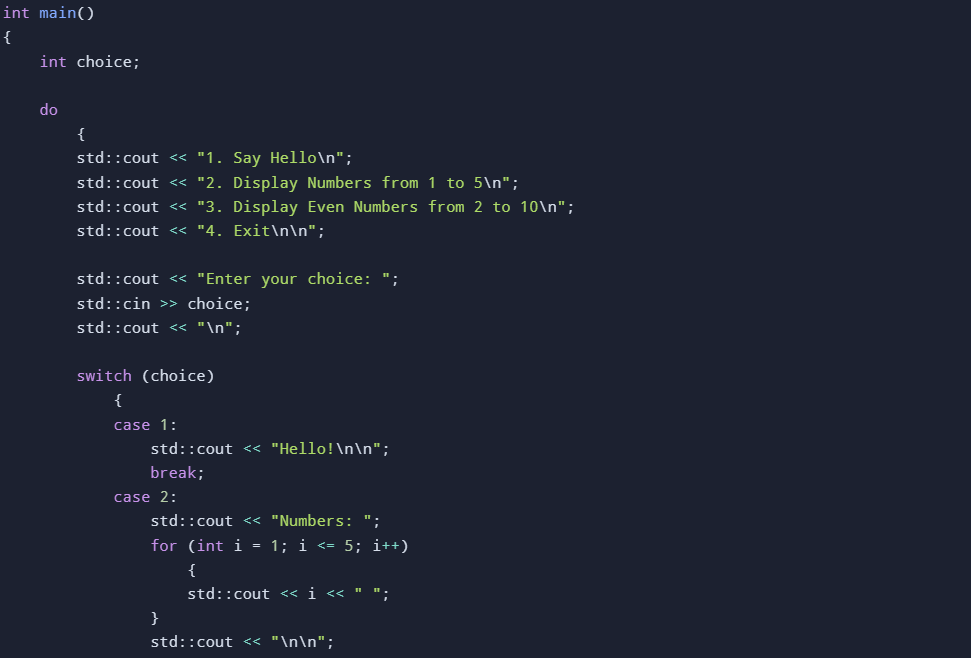
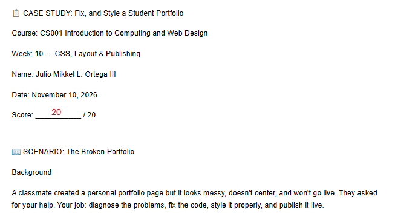
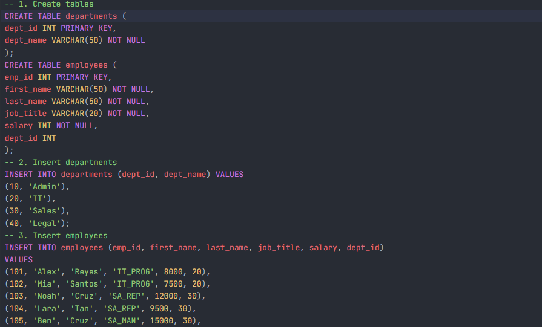
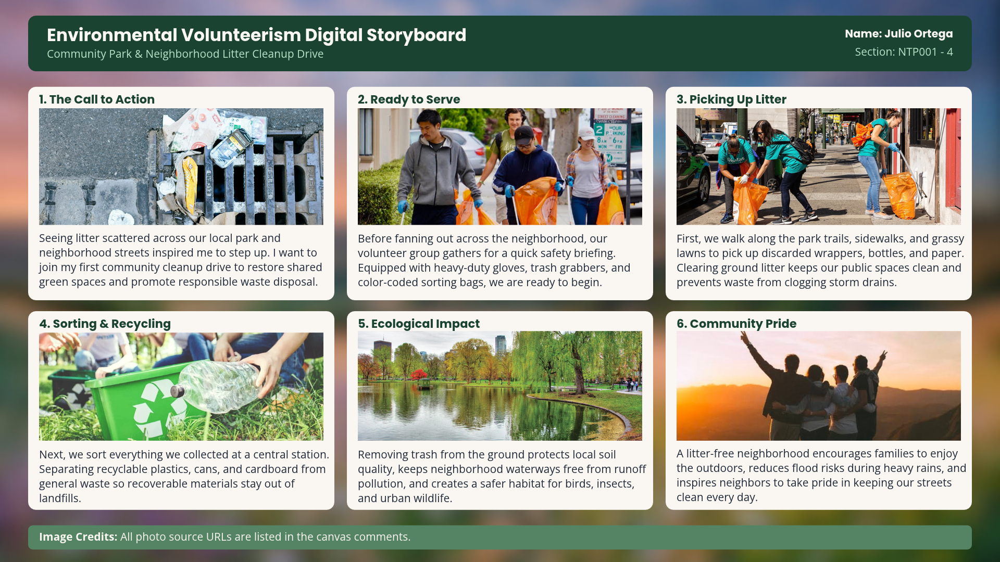
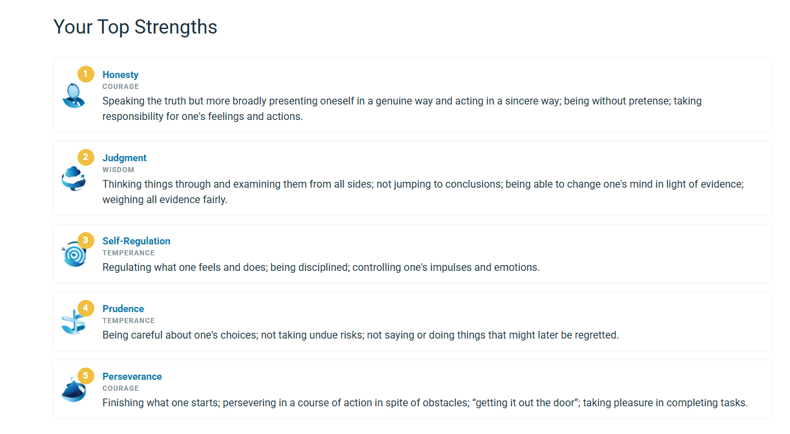
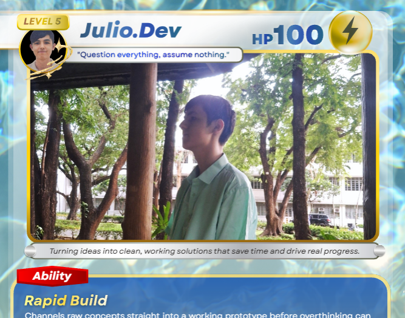

COMELEC On-The-Job Training
Completed one month of On-The-Job Training at COMELEC during Senior High School, learning the systems in use and seeing real work experience and how a workplace operates.
“Question everything, assume nothing.”
A first-year BS Computer Science student exploring how software is designed, how problems can be solved through code, and how thoughtful web experiences are built. Currently developing my skills in C++, Java, HTML and CSS through study, practice and experimentation.
About me
I'm Julio Ortega, a first-year Bachelor of Science in Computer Science student at the College of Innovation and Integrated Technology. I enjoy understanding how things work, breaking unfamiliar ideas into smaller parts, and learning by trying things for myself. That curiosity is a big part of what drew me toward computing.
My interests center on programming, web development and the thinking behind digital tools. I'm currently learning C++, Java, HTML and CSS, and I want to understand not only how to write code, but also how individual parts work together to create something useful. I approach each new topic as an opportunity to strengthen my fundamentals and become a more capable problem-solver.
What motivates me most is the process of turning a question or an idea into something I can test and improve. I know that becoming a good developer takes patience, consistent practice and a willingness to learn from mistakes. I want to keep building those habits, take on increasingly challenging work, and use what I learn to create technology that is practical, understandable and helpful to others.
Education
College of Innovation and Integrated Technology
I'm beginning to develop a structured understanding of computer science, from programming fundamentals to the way software and web technologies fit together. Through coursework and regular practice, I'm learning C++, Java, HTML and CSS while improving how I break down problems, test ideas and explain my approach. My goal is to build strong fundamentals that I can rely on as I explore more advanced topics.
Ste. Anne de Beaupre School
I completed Senior High School in 2026. This milestone marked the end of one stage of my formal education and the beginning of a more focused academic direction. It gave me a foundation to build on and encouraged me to continue exploring the subjects and skills that interest me, especially technology and computing.
Ste. Anne de Beaupre School
During my years at school, I became increasingly interested in how computers work and how people use them to create digital tools. I used online resources, tutorials and explanations to explore computer concepts and learn the basics of coding at my own pace. Following examples, experimenting with code and looking up answers when I got stuck helped me see that programming is a skill developed through curiosity, practice and persistence. That independent learning helped shape my decision to pursue Computer Science.
Self-assessment
Learning technology involves more than understanding syntax; it also means recognizing how I work, where I perform well and what needs more attention. My strengths help me approach unfamiliar challenges, while being honest about my weaknesses gives me a practical direction for improvement. I see both as skills in progress rather than fixed labels.
I enjoy asking questions, researching unfamiliar topics and finding out why a tool or concept works the way it does. This helps me stay engaged when learning new programming ideas and encourages me to look beyond simply memorizing an answer.
When something does not work as expected, I try to isolate the problem, review the steps I took and test possible explanations. Breaking a challenge into smaller pieces makes it easier to understand and gives me a clearer path toward a solution.
I understand that tools, requirements and approaches can change. I try to stay open to unfamiliar concepts, learn from feedback and adjust my method when a different approach is more effective.
I sometimes spend too much time refining small visual details even after the main layout is already clear and functional. I want to get better at recognizing when further polishing adds real value and when it is time to move forward.
Plan: set a time limit for each screen and test the version that is good enough.
I can spend too long trying to solve a difficult problem independently before asking a question or seeking another perspective. Persistence is useful, but I also need to recognize when collaboration or a clear explanation would help me progress faster.
Plan: post the blocker after 30 minutes, not after three hours.
Explaining my ideas to a group can feel less comfortable than working through a technical problem on my own. I want to become more confident at describing my process, presenting results and answering questions clearly.
Plan: demo every class project aloud and join one club presentation per term.
What guides the work
The way I work matters just as much as the result. These values remind me to stay curious, communicate clearly and make steady progress. They are principles I want to apply whether I'm learning a new concept, working on a project or collaborating with other people.
Looking beyond the first answer, asking thoughtful questions and exploring how things work. Curiosity helps me keep learning instead of treating what I already know as the limit of what I can do.
Organizing ideas and communicating them in a way that others can understand. In code and design, clarity makes work easier to maintain, explain and use.
Making progress through regular effort rather than relying only on motivation. Small, repeated improvements help turn new knowledge into skills I can use with confidence.
To keep learning and apply my growing knowledge of programming and design to create clear, reliable and useful digital solutions. I want to approach each task thoughtfully, understand the problem before choosing an answer, and improve my work through testing and feedback.
To become a capable and dependable developer who can take an idea from an early concept to a working result. I hope to keep strengthening my technical skills, collaborate effectively with others and contribute to technology that solves real problems and makes everyday tasks easier.
Achievements
Completed one month of On-The-Job Training at COMELEC during Senior High School, learning the systems in use and seeing real work experience and how a workplace operates.
Graduated from Senior High School with honors and awards, closing out my secondary education on a strong note.

Built my first calculator as a C++ console program, an early step in turning programming concepts into something that works.
Milestones
This year marked the beginning of my academic journey. I started building the foundations of my education while gradually discovering my interests, recognizing my strengths, and exploring my creativity.
Building foundationsI continued developing both academically and personally. Along the way, I worked on becoming more confident, disciplined, and adaptable. These qualities helped me approach new experiences and challenges with a more positive mindset.
Personal growthI became more open to exploring different interests and learning opportunities. This stage helped me strengthen important skills such as communication, teamwork, and problem-solving, while learning to approach situations from different perspectives.
ExplorationAs I continued my academic journey, I began preparing for the transition to college. I developed greater independence and responsibility, and started taking my first steps toward the field I wanted to pursue: Computer Science.
Preparing for collegeI began college as a Computer Science student and started exploring programming and web development more intentionally. I also began building this digital portfolio as a place to present my progress, while continuing to develop my technical knowledge and creative skills.
Computer ScienceSelected projects
This section is a collection of projects and creative work that show what I have been learning and making. Each entry can include a preview image, a short explanation of the goal, the tools or skills involved, and what I learned while creating it. I will add individual project details as I prepare each piece for display.

Conducted a professional interview with someone working in a field connected to Computer Science, then completed a self-report analysis and group presentation. The activity helped me learn from a working professional's experiences and connect those insights to my own career preparation and development.
Developed an SQL database script for an assigned Cafe/Restaurant Management System and created an ERD using Mermaid. The work involved planning the database structure and representing how its entities and relationships fit together.

Created three beginner C++ programs: a grade pass-or-fail calculator, a basic menu with multiple choices, and a text character counter. These exercises helped me practice programming fundamentals and build simple interactive logic.

Completed 10 case-study activities for Introduction to Computing and Web Design, applying concepts from the subjects to different scenarios and practicing how to analyze and respond to computing-related tasks.

Used an online MySQL compiler to work with tables, create two tables, and write 10 queries. This activity introduced practical database operations and the essentials of defining structures and manipulating data.

Created a six-panel digital storyboard imagining a community environmental volunteerism effort. The panels featured a call to action, sorting and recycling, and a community park and neighborhood litter-cleanup drive.

Used my VIA strengths snapshot to identify two possible career paths and reflect on how each connects with my strengths, interests, values, personality traits, and experiences. Developed a SMART goal for each option, outlined three concrete action steps, and included a reflection.

Presented my personal brand launch in a creative trading-card format. I developed the brand name Julio.Dev, a slogan, and other brand elements to introduce my identity and direction as a Computer Science student.
Contact
I'm open to connecting with fellow students, developers and people interested in technology. If you would like to discuss my learning journey, share feedback or get in touch about a project, you can reach me by email or find me on GitHub.
julio.ortega.ciit@gmail.com